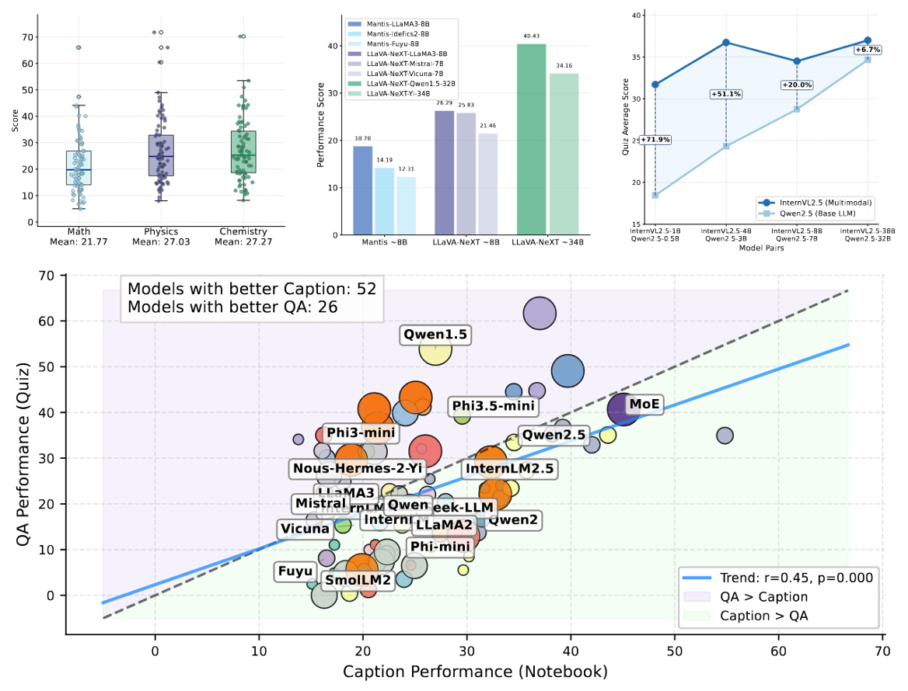

About
Experiences
Education
News
- Our paper Video-MMLU: A Massive Multi-Discipline Lecture Understanding Benchmark is accepted by ICCV 2025 Findings.
- Our paper Bringing RNNs Back to Efficient Open-Ended Video Understanding is accepted by ICCV 2025.
- We are hosting two CVPR 2025 Video Understanding Challenge @ LOVE Track 1A and LOVE Track 1B.
- We release Video-MMLU, a Massive Multi-Discipline Lecture Understanding Benchmark.
- One paper accepted to CVPR 2025 workshop@Efficient Large Vision Models.
- Our paper AuroraCap: Efficient, Performant Video Detailed Captioning and a New Benchmark is accepted by ICLR 2025.
- Our paper Meissonic: Revitalizing masked generative transformers for efficient high-resolution text-to-image synthesis is accepted by ICLR 2025.
Selected Publications and Manuscripts
* Equal contribution. † Project lead. ‡ Corresponding author.
Also see Google Scholar.



Teaching Assistant
Teaching Assistant (TA), with Prof. Gaoang Wang
Selected Honors & Awards
- National Scholarship, 2024 (Zhejiang University)
- National Scholarship, 2021 (Dalian University of Technology)
Top